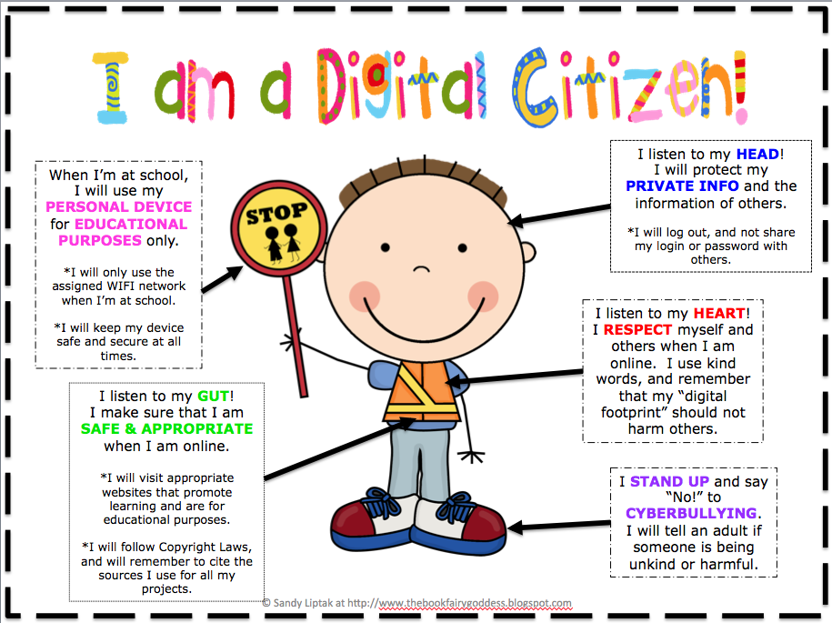

Welcome!
Welcome to my website about Digital Citizenship. I will be talking about digital citizenship, this will include me defining what it means, some good habits to have online, staying safe, and the nine elements of digital citizenship.
The internet can be amazing, but only if we use it responsibly and correctly. Use the buttons that are provided to see what being a good digital citizen is all about. Digital Citizenship is a good way to learn how to be good in real life too because you're learning easy ways to respect each other and follow easy rules.
